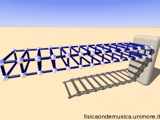
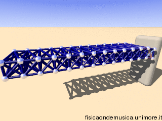
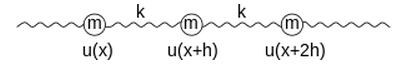
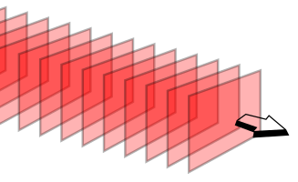
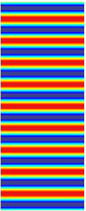
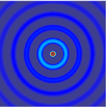
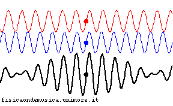

Per consigli, suggerimenti, eventuali errori o altro potete scrivere una email a antonio.pierro[at]gmail.com
Video Introduzione 1/3
Video Introduzione 2/3
Video Introduzione 3/3
Onda - definizione e classificazione
Un'onda è una perturbazione che si propaga nello spazio, trasportando energia e quantità di moto, ma non materia.
Le onde si possono dividere in onde:
Longitudinali
Trasversali
Onde longitudinali
Le onde si dicono longitudinali quando la direzione della perturbazione è la stessa dello spostamento dell'onda.

Onde trasversali
Le onde si dicono trasversali quando la direzione della perturbazione è
perpendicolare a quella dello spostamento dell'onda.

Grandezze caratteristiche delle onde
Le grandezze caratteristiche delle onde sono:
Ampiezza.
Periodo, frequenza e pulsazione.
Lunghezza d’onda.
Ampiezza
L'ampiezza dell'onda è lo spostamento
massimo rispetto al valore di equilibrio.
Dato che lo spostamento può essere sia positivo che
negativo, la massima variazione totale di questa grandezza è due volte l'ampiezza.
Periodo, frequenza e pulsazione
La periodicità nel tempo dell'onda è determinata dal periodo T, il cui reciproco è la frequenza:
\[
\nu = \frac{1}{T} = \frac{\omega}{2\pi}
\]
La costante \(\omega\) rappresenta la pulsazione o frequenza angolare dell'onda.
Le grandezze T, \(\nu\) e
\(\omega\) hanno lo stesso significato discusso trattando il moto armonico.
Lunghezza d’onda
La periodicità nello spazio dell'onda è determinata dalla lunghezza
d’onda \(\lambda\), che rappresenta lo spazio percorso dall'onda durante un periodo di oscillazione:
\[
\lambda = v * T = \frac{v}{\nu}
\]
È importante osservare che la lunghezza d'onda dipende sia dalla frequenza, che è fissata
dalla sorgente dell'onda, sia dalle proprietà del mezzo in cui essa viaggia, cioè la velocità di
propagazione.
Equazione delle onde
Data una funzione scalare \(\psi(x, y, z, t)\) si definisce equazione d'onda la seguente equazione differenziale:
\[
\nabla^2 \psi(x, y, z, t)\ = \frac{1}{v^2} \frac{\partial^2 \psi(x, y, z, t)}{\partial t^2}
\]
In una dimensione questa equazione si riduce a:
\[
\frac{\partial^2 \psi(x, y, z, t)}{\partial x^2} = \frac{1}{v^2} \frac{\partial^2 \psi(x, y, z, t)}{\partial t^2}
\]
Equazione delle onde: dimostrazione
L'equazione delle onde può essere ricavata per una dimensione dalla legge di Hooke e dalla seconda legge della dinamica.

Sia u(x, t) la distanza dalla posizione di equilibrio di un punto di massa m.
\[
\sum_{i = 1}^{n} \vec{F}_{Hooke, i} = m \frac{\partial^2}{\partial t^2} u(x + h, t)
\]
Facendo tendere a zero la distanza h e a \(\infty\) il numero di punti:
\[
\frac{\partial^2 u(x, t)}{\partial x^2} = \frac{1}{v ^ 2} \frac{\partial^2 u(x, t)}{\partial t^2}
\]
Teorema di Fourier
Si può dimostrare che una qualunque funzione matematica periodica si può sviluppare in quella che viene definita Serie di Fourier:
\[
f(x) = \sum_{n=1}^{N} a_n sin (n \omega x + \phi_n) + \sum_{m=1}^{M} b_m cos (m \omega x + \phi_m)
\]
Tale teorema è molto utile in quanto ci permette di trattare le onde nella loro forma più semplice: quella sinusoidale. Onde di forma più complessa possono essere sempre immaginate come la somma di tante onde sinusoidali.
Soluzione dell'equazione differenziale.
Si può dimostrare che la soluzione dell'equazione differenziale deve dipendere dalla posizione x, dal tempo t e dalla velocità \(\vec{v}\).
Si potrà scrivere quindi come:
\[
\psi = \psi_0 sin (k x - \omega t)
\]
dove \(\psi_0\) rappresenta l'ampiezza massima dell'oscillazione. Il termine \(k\) si chiama numero d'onda ed è uguale a \(k = \frac{2\pi}{\lambda}\)
Rappresentazione grafica di un'onda 1/2
Rappresentazione grafica di un'onda 2/2
Fronte d'onda
Data un'onda che si propaga nello spazio, si definisce fronte d'onda l'insieme dei punti che vibrano concordemente, in modo tale che per ciascuno di essi lo spostamento dalla posizione di equilibrio assuma lo stesso valore in ogni istante.

Onda piana

Un'onda piana è un'onda i cui fronti d'onda sono infiniti piani paralleli perpendicolari alla direzione di propagazione.
Le onde piane soddisfano l'equazione delle onde in una dimensione:
\[
\frac{\partial^2 f}{\partial x^2} - \frac{1}{v^2} \frac{\partial^2 f}{\partial t^2} = 0
\]
Onda sferica

Un'onda è sferica se il suo fronte d'onda è una sfera.
Le onde sferiche soddisfano l'equazione delle onde in tre dimensioni:
\[
\nabla ^2 f - \frac{1}{v^2} \frac{\partial^2 f}{\partial t^2} = 0
\]
Equazione delle onde elettromagnetiche
L'equazione che descrive la propagazione di un'onda elettromagnetica è l'equazione delle onde, che può essere scritta a partire dai campi elettrico e magnetico:
\[
\nabla ^2 \vec{E} - \epsilon\mu \frac{\partial^2 \vec{E}}{\partial t^2} = 0
\]
\[
\nabla ^2 \vec{B} - \epsilon\mu \frac{\partial^2 \vec{B}}{\partial t^2} = 0
\]
Nel vuoto v diventa la velocità della luce:
\[
v = \sqrt{\frac{1}{\epsilon\mu}}, \quad c = \sqrt{\frac{1}{\epsilon_0\mu_0}}
\]
Interferenza 1/3
Interferenza 2/3
Consideriamo due onde aventi la stessa ampiezza e velocità ma sfasate di \(\phi\):
\[
\psi_1 = \psi_0 sin (k x - \omega t), \quad \psi_2 = \psi_0 sin (k x - \omega t + \phi)
\]
L'onda risultante sarà:
\[
\psi = \psi_1 + \psi_2 = \psi_0 sin (k x - \omega t) + \psi_0 sin (k x - \omega t + \phi)
\]
Ricordiamo ora le formule di prostaferesi:
\[
sin(\alpha) + sin \beta = 2 sin(\frac{\alpha + \beta}{2}) cos(\frac{\alpha - \beta}{2})
\]
\[
\psi = 2\psi_0 cos (\frac{\phi}{2}) sin (kx - \omega t + \frac{\phi}{2})
\]
Interferenza 2/3
Osserviamo che l'ampiezza dell'onda è rappresentata dal termine:
\[
2\psi_0 cos (\frac{\phi}{2})
\]
Due onde sono in fase se:
\[
\frac{\phi}{2} + n \pi = 0 \Rightarrow 2\psi_0 cos (\frac{\phi}{2}) = 2\psi_0
\]
Due onde sono in opposizione di fase se:
\[
\frac{\phi}{2} + m \pi = \frac{\pi}{2} \Rightarrow 2\psi_0 cos (\frac{\phi}{2}) = 0
\]
Principio di Huygens
Ogni elemento dΣ di un fronte d'onda Σ si può considerare come una sorgente secondaria di onde sferiche in fase con la primaria e di ampiezza proporzionale a quella dell'onda primaria e all'area dΣ.
Moto armonico smorzato
Equazione del moto armonico smorzato
Si dimostra che l'equazione del moto armonico smorzato è la seguente:
\[
x(t) = X_0 e^{-\gamma t} sin (\omega t + \phi_0)
\]
Nello studio di fenomeni fisici reali i corpi in movimento sono di solito soggetti ad attriti, di solito direttamente proporzionali alla velocità:
\[
R = -kx - b v = m a_x \Rightarrow
\]
\[
\frac{d^2 x}{dt^2} + \frac{b}{m}\frac{dx}{dt} + \frac{k}{m} x = 0
\]
Ricerca soluzioni del moto armonico smorzato 1/4
Per semplificare i calcoli si definisce:
\[
\gamma = \frac{b}{2m}, \quad \omega_0^2 = \frac{k}{m} \Rightarrow
\frac{d^2 x}{dt^2} + 2 \gamma \frac{dx}{dt} + \omega_0^2 x = 0
\]
Se il discriminante è maggiore o uguale di zero esistono due soluzioni reali
Se il discriminante è minore di zero esistono due soluzioni immaginarie:
\[
\alpha_{1} = -\gamma + i \omega, \quad \alpha_{2} = -\gamma -i \omega
\]
L'equazione differenziale per il principio di sovrapposizione ammette una combinazione lineare delle due soluzioni:
\[
x(t) = A x_1(t) + B x_2(t) = A e^{(-\gamma + i \omega) t } +
B e^{(-\gamma - i \omega) t }
\]
\[
x(t) = e^{-\gamma t} [A e^{i \omega t} + B e^{- i \omega t}]
\]
Ricerca soluzioni del moto armonico smorzato 3/4
Per la formula di Eulero posso riscrivere la funzione esponenziale complessa come combinazione di seno e coseno:
\[
x(t) = e^{-\gamma t } [A [ cos(\omega t) + i sen(\omega t) ] + B [ cos(\omega t) - i sen(\omega t)]]
\]
\[
x(t) = e^{-\gamma t } [ (A + B) cos(\omega t) + i (A - B) sen(\omega t)]
\]
x(t) sarà una funzione reale solo se A e B saranno complessi coniugati:
\[
A = a + i b, \quad B = a - i b \Rightarrow A + B = 2 a, \quad A - B = 2ib
\]
\[
x(t) = e^{-\gamma t } [ 2a cos(\omega t) -2b sen(\omega t)]
\]
Ricerca soluzioni del moto armonico smorzato 4/4
Esprimo le costanti a e b in questo modo:
\[
2 a = X_0 sin(\Phi),\quad 2 b = - X_0 cos(\Phi) \Rightarrow tg(\Phi) = -\frac{a}{b}
\]
Applicondo la formula della somma degli angoli:
\[
sin(\alpha + \beta) = sin(\alpha) cos(\beta) + cos(\alpha) sin(\beta)
\]
\[
x(t) = e^{-\gamma t } [ X_0 sin(\Phi) cos(\omega t) + 2 X_0 cos(\Phi) sen(\omega t)]
\]
\[
x(t) = X_0 e^{-\gamma t } sin (\omega t + \Phi)
\]
Moto armonico forzato smorzato (risonanza)
Risonanza
La risonanza è una condizione fisica che si verifica quando un sistema oscillante forzato viene sottoposto a sollecitazione periodica di frequenza pari all'oscillazione propria del sistema stesso:
\[
F_{elastica} + F_{attrito\_viscoso} + F_{esterna} = ma
\]
\[
- k x - b \frac{dx}{dt} + F_e cos(\omega_e t) = m \frac{d^2 x}{dt^2}
\]
Un fenomeno di risonanza provoca un aumento significativo dell'ampiezza delle oscillazioni.
Risonanza - dimostrazione 1/3
Definendo, il coefficiente di smorzamento e la pulsazione propria rispettivamente:
\[
\gamma = \frac{b}{2m}, \omega_0 = \sqrt{\frac{k}{m}}
\]
La soluzione generale dell'equazione differenziale è una combinazione lineare tra la soluzione dell'omogenea associata
\[
x_{Omogenea}(t) = A_0 e^{-\gamma t} sin(\omega t + \Phi)
\]
e la soluzione particolare:
\[
x_{Particolare}(t) = A^{'} sin (\omega_e t + \Phi^{'})
\]
avendo posto:
\[
A^{'} = \frac {F_e} {m} \frac{1} {\sqrt{(\omega_0 ^2 - \omega_e ^2)^2 + 4 \gamma ^2 \omega_e ^ 2}},
tg(\Phi{'}) = \frac{2\gamma \omega_e}{\omega_0 ^2 - \omega_e ^2}
\]
Risonanza - dimostrazione 3/3
La soluzione particolare rappresenta quindi la soluzione a regime, infatti la soluzione della omogenea associata è destinata a diventare nulla dopo un tempo ragionevole:
\[
x_{Regime}(t) = A^{'} sin (\omega_e t + \Phi^{'})
\]
Se la pulsazione propria del sistema \(\omega_0\) ha un valore che tende alla pulsazione della forza esterna \(\omega_e\) si verifica il fenomeno della risonanza.
Battimenti

Il battimento in acustica
In acustica il battimento è la frequenza (di battimento) risultante dalla sovrapposizione di grandezze periodiche, in genere oscillazioni sinusoidali aventi frequenze poco diverse
L'effetto è un rafforzamento seguito da un indebolimento del suono a seconda che le frequenze siano in concordanza o in discordanza di fase.
Il battimento - Approccio matematico 1/2
Rappresento due suoni con due onde sinusoidali di uguale ampiezza A:
\[
\xi_1 = A sin(\omega_1 t ),\quad \xi_2 = A sin(\omega_2 t )
\]
Faccio la somma applicando le formule di prostaferesi:
\[
\xi = \xi_1 + \xi_2 = 2 A cos(\frac{\omega_1-\omega_2}{2} t ) * sin(\frac{\omega_1+\omega_2}{2} t )
\]
Se \(\Omega\ << \omega\), cioè se \(\omega_1\) e \(\omega_2\) sono vicine, si può esprimere la somma dei due suoni come un suono di frequenza intermedia, pari a \(\omega\), la cui frequenza sia modulata alla frequenza molto più bassa \(\Omega\).